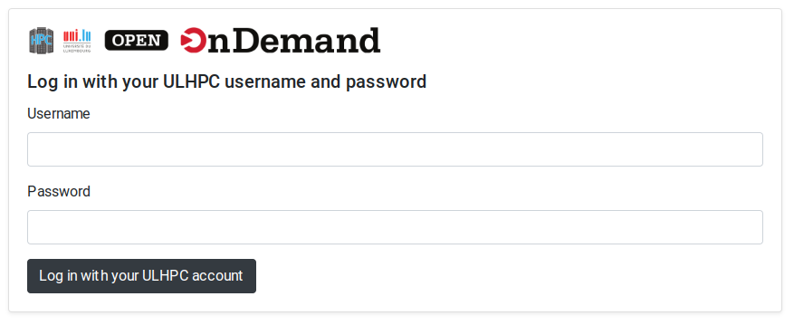
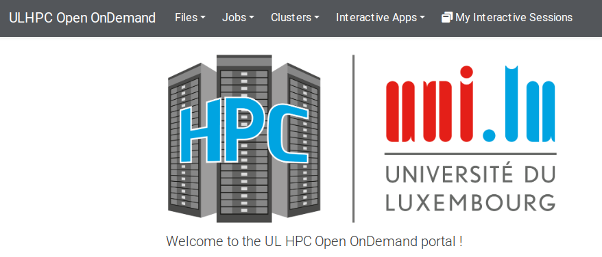
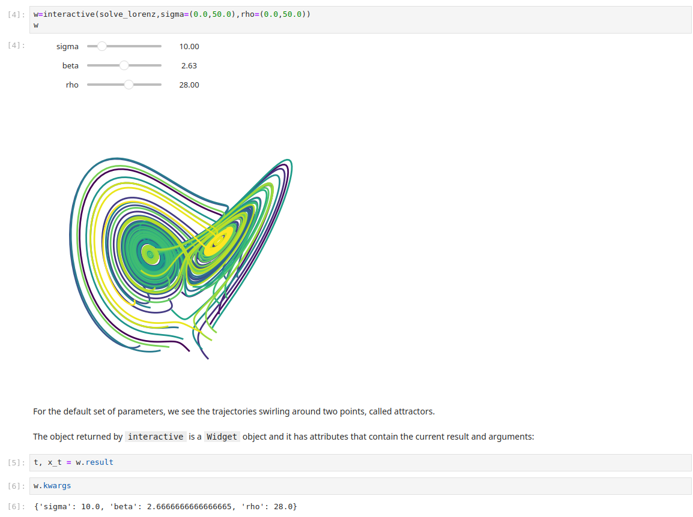
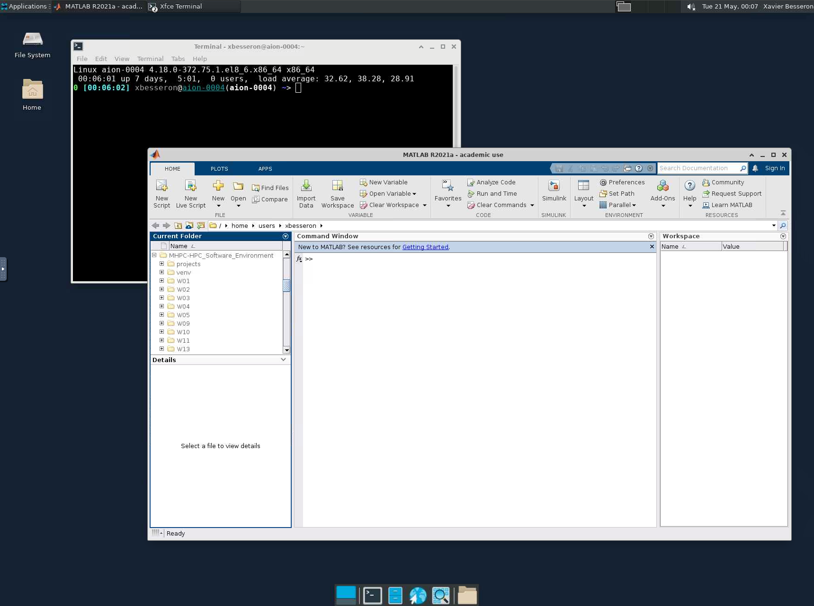

Open OnDemand Web Portal for HPC
- Authors: Xavier Besseron (University of Luxembourg)
- License: ©2024 CC BY-NC-SA 4.0
- Date of practical: Tuesday 21st of May 2024
🔵 Introduction
Welcome to our practical session on the Open OnDemand Web Portal for the HPC of the University of Luxembourg.
Web portals for HPC serve as user-friendly interfaces that allow researchers, students, and industry professionals to interact with powerful computing resources. In this session, you will have a quick overview and explore the Open OnDemand portal of the University of Luxembourg.
Open OnDemand is a powerful web portal that provides remote access to high-performance computing (HPC) resources.
-
Overview of Open OnDemand:
- Open OnDemand connects users to supercomputers via the web.
- It empowers students, researchers, and industry professionals by offering an alternative to the command-line interface.
- Users can access supercomputers from anywhere, on any device, with zero installation required.
- It’s free, open source, and compatible with any device.
-
Features:
- Interactive Desktop and Applications: Run applications like MATLAB, ANSYS, Jupyter Notebook, and R Studio Server.
- File Management: Manage files through the web interface.
- Job Submission and Monitoring: Submit and monitor HPC jobs.
- Class-Specific Applications: Custom applications for specific courses.
- Actively Developed and Supported: Funded by the National Science Foundation (NSF) and widely used worldwide.
Objectives
This session will cover 3 parts:
- Overview of the portal: You will connect to the portal and get familiar with the interface.
- Jupyter Notebook: You will start and run a Jupyter Notebook on the Uni.lu HPC using the Open OnDemand portal.
- Desktop Session: You will start a Desktop session and interact with a graphical desktop environment.
Instructions
This practical is an individual work to be carried out on the Aion cluster of the HPC platform of the University of Luxembourg.
For this practical, this is no question or report, simply follow the instructions on this page.
🔵 Part 1: Connection and Overview
The Open OnDemand portal of the Uni.lu HPC can be accessed using your web browser at this address: https://hpc-portal.uni.lu/
Access to the portal
The Open OnDemand portal of the Uni.lu HPC is an internal service and is only accessible from within the network of the University.
When connecting, you will be asked to authenticate using the username and password of your HPC account.

Once connected, the top menu gives you access to the different functionality of the portal:
- Files: Access to the files;
- Jobs: Visualize the jobs started from the portal;
- Clusters: Open a Shell access (via your web browser) to the HPC clusters;
- Interactive Apps: Start a new interactive application on the HPC;
- My Interactive Sessions: Visualize the interactive sessions started from the portal.

🔵 Part 2: Jupyter Notebook
For this part, minimal guidance is provided. Instead, you will have to explore yourself the portal to achieve the task.
Your objective is to:
- Start a Jupyter Notebook session on the Aion cluster.
- For the
Virtualenvsetting, you can use a new name likemhpc_venv.
- For the
- Connect to the Jupyter Notebook once the job is running.
- Upload this example notebook Lorenz.ipynb
- Run the notebook successfully.
- You will need to fix the first cell of the notebook to install the other missing packages.
- To properly end your Jupyter session, make sure you do
File -> Shutdown. This will terminate your HPC job.

🔵 Part 3: Desktop Session
For this part, minimal guidance is provided. Instead, you will have to explore yourself the portal to achieve the task.
Your objective is to:
- Start a Desktop session on the Aion cluster.
- Connect to the Desktop session once the job is running.
- Open a terminal and check the hostname to make sure you're connected to a compute node.
- Open a file manager to navigate through your files on the HPC
- Open the MATLAB graphical interface:
- Open a terminal
- Search and load the MATLAB module
- Run the
matlabcommand
- To properly end your Desktop session, make sure to go to the top-left menu and do
Applications -> Log Out. This will terminate your HPC job.
